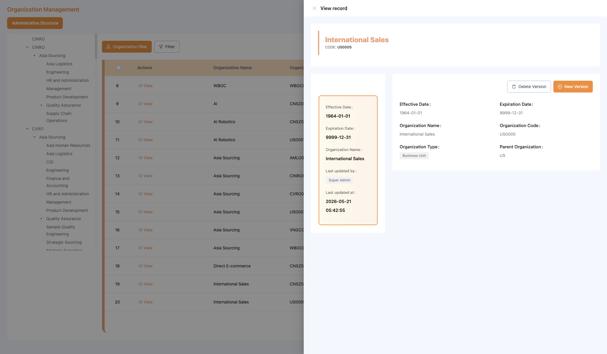
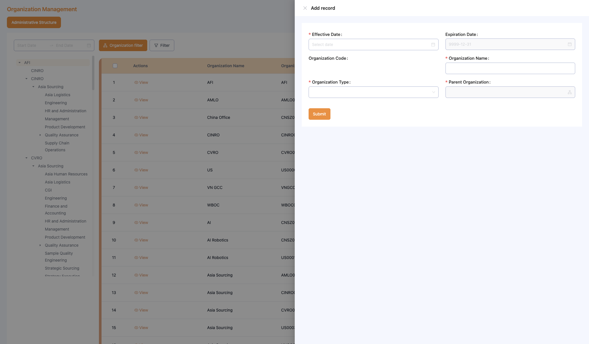
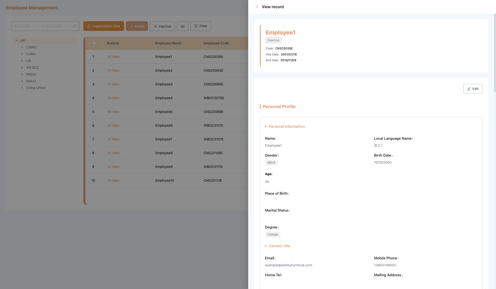
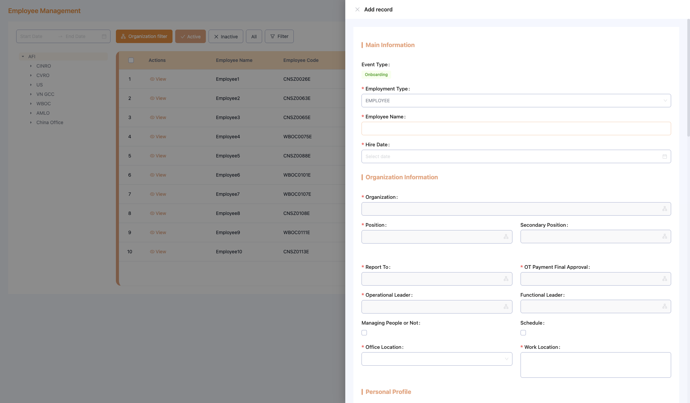
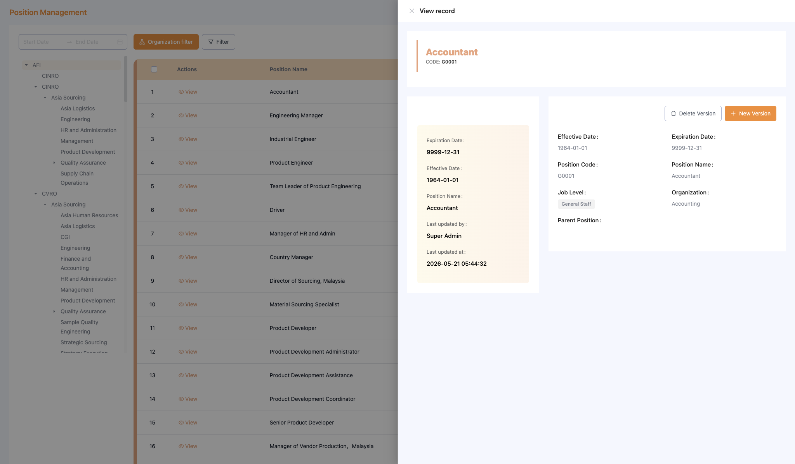
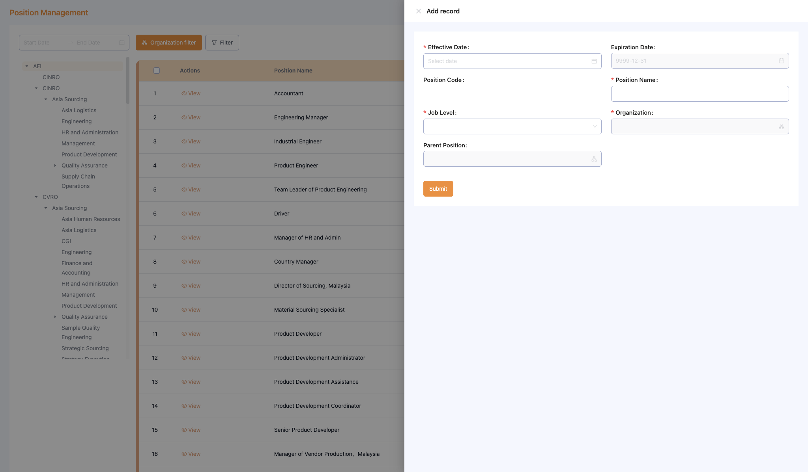
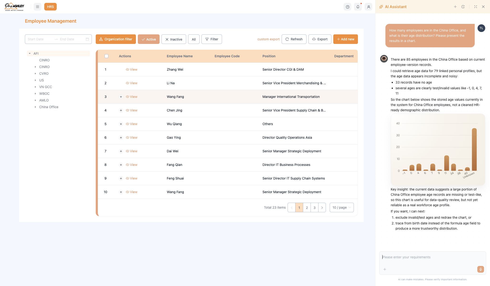

HRS Human Resources System — User Guide
Audience: HR Administrators, Organization Administrators (new users)
Version: V1.0
Quick Start
After logging into xWork, find the HRS module in the left navigation bar. It contains 5 modules:
- Organization Management
- Employee Management
- Position Management
- Employee Reporting Chart
- AI Assistant
Module 1: Organization Management

1.1 View the Organization List
1. Enter Organization Management
2. The left sidebar shows the org tree — the full AFI global hierarchy
3. Click any node in the tree to filter the right-side table to that org unit
4. Table columns: Action / Org Name / Org Code / Effective Date / Expiry Date / Type
5. Use the Filter button at the top to filter by date range
1.2 View Organization Detail
1. Click the View button on any row in the org list
2. The detail page shows complete org information
3. The middle section displays a timeline of all historical versions
4. Click any node on the timeline to see that version's details on the right

1.3 Add a New Organization
1. Click the Add New button at the top right of the org list
2. Fill in the form:
- Org Name (required)
- Org Code (required)
- Org Type (required)
- Effective Date (required)
- Parent Org (select via org picker)
3. Click Save — the system automatically records the first timeline version

1.4 Add a New Version on the Timeline
Use this when org information changes (e.g. new leader, type change) and you need to record a new version:
1. Enter the org detail page
2. Click the + button on the timeline
3. Fill in the new version information and effective date
4. Click Save
Module 2: Employee Management

2.1 View the Employee List
1. Enter Employee Management
2. Switch employee status at the top: Active / Inactive / All
3. Use the org tree on the left to filter employees by department
4. Table columns: Action / Employee Name / Code / Position / Department / Effective Date / Tenure / Status
2.2 View Employee Detail
1. Click the View button on any employee row
2. View complete employee info: name, code, org, current position, tenure, etc.
3. The timeline shows all historical versions (transfers, department changes)

2.3 Add a New Employee
1. Click Add New at the top right
2. Fill in the employee information:
- Employee Name (required)
- Organization Information (required)
- Personal Profile (required)
- Contract
- Work Experience
3. Click Save — the system automatically creates the first timeline version

2.4 Export Employee Data
1. Click the Custom Export button at the top right
2. Select the fields you want to export
3. Click Export to download the file
Module 3: Position Management

3.1 View the Position List
1. Enter Position Management
2. Use the org tree on the left to filter by department
3. Table columns: Action / Position Name / Position Code / Job Level / Parent Position / Org Unit
3.2 View Position Detail
1. Click the View button on any position row
2. View complete position information and the timeline of historical versions

3.3 Add a New Position
1. Click Add New
2. Fill in the position information:
- Position Name (required)
- Position Code (required)
- Job Level (required)
- Organization (select via org picker)
- Parent Position (select via position picker, optional)
3. Click Save

Module 4: Employee Reporting Chart

4.1 Switch Layout Views
- Horizontal: Click Horizontal in the toolbar — tree-style horizontal layout
- Vertical: Click Vertical in the toolbar — tree-style vertical layout
- Compact: Click Compact — condensed card layout for deep hierarchies
4.2 Read the Reporting Cards
Each card shows:
- Position name
- Operational Leader — direct operational reporting manager
- Functional Leader — functional domain reporting manager
- Report To — direct line manager
4.3 Drill Down
In the org chart cards:
1. Click the employee count → opens the employee list for that org
2. Click the position count → opens the position list for that org
3. Click the job count → opens the job role list for that org
4.4 Export the Org Chart
1. Click Export at the top right of the toolbar
2. Select the export format (image / PDF)
3. Click confirm to download
Module 5: AI Assistant

The AI Assistant is a conversational sidebar accessible from any HRS module. It lets you query HR data and execute tasks using plain English.
5.1 Open the AI Assistant
Click the AI icon in the top-right area of any HRS page. The sidebar slides in from the right.
5.2 Query Workforce Data
Type your question in the input field at the bottom. Examples:
| Question | What You Get |
|---|---|
| "How many employees joined this month?" | Headcount breakdown by org unit for the current month |
| "Show me a workforce overview for Asia Sourcing" | Summary of active employees, positions, and org structure |
| "How many employees left in Q2?" | Turnover count with org-level breakdown |
| "List all positions under Finance with no employee" | Vacant position list |
5.3 Execute Tasks via Natural Language
You can create or update records directly from the AI Assistant:
| Command | Action |
|---|---|
| "Add a new employee: John Smith, start July 15" | Opens the Add Employee form pre-filled |
| "Create a position: HR Specialist under HR Admin, General Staff" | Creates the position after confirmation |
| "Deactivate org unit: Asia Logistics" | Deactivates the org unit after confirmation |
The AI will always show a confirmation card before executing any write action. Review and confirm before proceeding.
5.4 View Task History
The bottom of the sidebar shows a log of all queries and actions performed in the current session.
Quick Reference
| Task | Path |
|---|---|
| View full company org tree | Organization Management → left sidebar |
| Look up an employee's transfer history | Employee Management → find employee → View → Timeline |
| View reporting lines for a department | Reporting Chart → select dept in left tree |
| Add a new employee | Employee Management → Add New |
| Export employee list | Employee Management → Custom Export |
| Query headcount with AI | Click AI icon → type your question |
| Create a record with AI | Click AI icon → describe the task |
If you encounter issues, refer to the FAQ or contact the HRS system administrator.